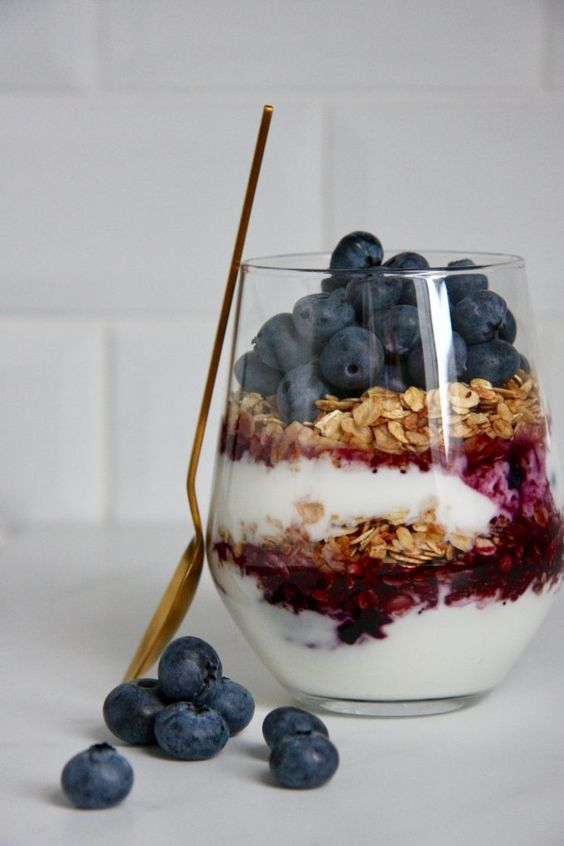

Parfait

Description
Granola Parfait made with a healthier granola (made using coconut oil!) The parfait is layered with granola, dark chocolate, Greek yogurt and berries – delicious!
These parfaits are so delicious. Layers of light Greek yogurt, healthy granola, chopped dark chocolate pieces, and berries. A healthy and filling breakfast (or snack) you’ll love! Perfect for your New Year’s healthy eating resolutions!
Ingredients
- 6 c. uncooked old fashioned oats
- 2 c. sliced almonds
- 1 c. shredded coconut
- 1 c. roasted and salted sunflower seeds
- 1 Tbsp. flaxseed
- 1 Tbsp. wheat germ
- 1/2 c. coconut oil
- 1 c. honey
- Greek yogurt
- raspberries, strawberries, chopped dark chocolate
Steps
- Mix first six ingredients in a large mixing bowl.
- Melt your coconut oil in a small bowl in the microwave (about 30 seconds to 1 minute). Add the honey and mix. Pour over oat mixture and stir.
- Pour on a cookie sheet and spread into an even layer.
- Bake at 325 degrees for about 15 minutes, then stir it and let bake for another 10-15 minutes, until golden brown.
- Let granola cool. Store in an airtight container.
- When ready to assemble, place yogurt in bottom of glass. Add a layer of granola, then chopped dark chocolate, then berries and repeat. Dig in and enjoy!
Return